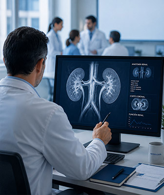

Misión
Somos una asociación civil científica que impulsa apasionarse por el progreso y divulgación de la Nefrología facilitando la vinculación entre sus asociados y colaborando en la solución de problemas asistenciales y sociales relacionados con la disciplina.
Visión
Buscamos ser un referente nacional e internacional para la mejora continua de los cuidados relacionados con la salud renal contando con la participación activa de sus diferentes grupos de interés (pacientes, profesionales, sociedades, instituciones…).
Valores:
Profesionalismo y rigor científico:
Ética, inclusividad y diversidad: La SUN promoverá el acceso al conocimiento para tod@s, rechazando la discriminación en todas sus formas. Incluirá enfoques para mejorar la participación y representación de las mujeres en la especialidad.
Transparencia e integridad:
Sostenibilidad: La SUN incorporará los principios de la sostenibilidad en sus prácticas y participaciones.
Conciencia ambiental: Fomentar prácticas de atención médica renal ambientalmente responsables.
›